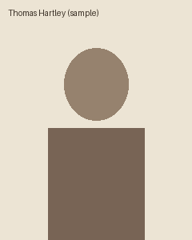
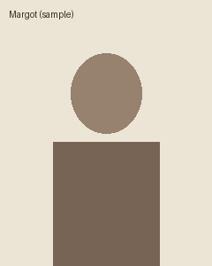

Where to start
Arthur Hartley and Marguerite Moreau married in Soho on 7 June 1930. His family were wool merchants and printers in Leeds. Hers were silk weavers who came to London from Lyon in 1878.
Each person on the family tree has a profile with the records behind it. The family map shows where they were born, lived, married and sailed.
Grandpa Arthur
Arthur Hartley was born in Leeds on 14 February 1902, the son of William Hartley, a printer, and Alice Turner. His grandfather Thomas Hartley traded wool on Park Row.
Arthur taught at a school in Leeds for forty years.
Grandma Margot
Marguerite Moreau, always called Margot, was born at 9 Greek Street, Soho, on 21 July 1905. Her father Henri was a tailor and her mother Edith Clarke came from Southampton.
From Lyon to Soho
Jean-Baptiste Moreau and Louise Fabre crossed from Calais to Dover on the Lord Warden on 4 May 1878. By 1881 he was weaving silk in Greek Street. The story is on the Moreau page.
The wedding
Arthur met Margot in London in 1929, and they married at Soho the next summer. They made their home in Leeds.
The photographs

